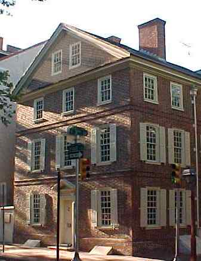

The purpose of this website is in some sense to recreate Philadelphia in its earliest period, 1682-1800, by pulling together information from diverse sources. During this time it was the most thriving city in the colonies, growing from its origin in 1682 to the second-largest city in population in the British Empire at the time of the beginning of the American Revolution, and after the Revolution to the first city of the United States, its economic and political capital. That time saw its politics change from control by dissident and somewhat anti-authoritarian Quakers to control by Anglicans whose prosperity and orientation to London made them moderates and loyalists. Much of its economy involved the supply of raw materials-grain and raw iron, mainly-to the mother country and other places, but finished products such as furniture moved up in importance as the century continued. This was especially true after the Revolution when England's self-serving economic policy no longer had the force of law.
The picture to the left is of the c.1776 house at the northwestern corner of Pine and 3rd
Streets, where Revolutionary War hero Thaddeus Kosciusko lived for a short time in the 1790s
when it was a boarding house. Today it's run by the National Park Service as a museum of
Kosciusko. According to Philadelphia historian Joseph Jackson, the house on this site was the
birthplace of Col. John Nixon, who, Jackson stated, was the first person to read the
Declaration of Independence publicly. As the Declaration was written in the same year
as the construction of the house, it was obviously not Nixon's birthplace, though he might have
lived there at some time.
Here you can find:
The most important thing about this page is this idea: too much research is duplicative of previous efforts. Genealogists and historians seem to me to constantly be reinventing the wheel. What I propose is a more systematic way of keying historical information: geographically. After all, life itself revolves around the places in our lives. Most historical resources like directories or censuses are keyed, one might say, biographically. Everything is keyed to personal facts; family, surname, birth date, marriage, death date, etc. How can we really know what life was like for any one person or family without knowing, for example, who their neighbors were and what they did? These are details of a historic figure's life that cannot be found easily with biographically keyed resources.
Any such project is potentially daunting in scope, its limits defined by the quantity of information out there. There is even quite a lot known about 18th century Philadelphia, a small town by today's standards, but one must begin somewhere. Unfortunately I do not have a search function yet, but an ordinary Net search (I usually use Google) with the name in this format: "Last name, first name" (include the quotation marks) will usually pull it in unless it's spelled differently in the directory from the way you think it is.
The 1791 Clement Biddle directory of Philadelphia is now complete and available for download at the same link (below) where the 1785 directories are. All listings from 1791 are now integrated into the block-by-block listings, and the integration of the 1790 census information has begun.
LINKS have moved here.
Feedback on this project is always welcome. What some have said about it in the past can be found here.
Email me with comments, questions or suggestions. Please note that except for scholars and similarly worthy causes, I generally charge for research. (Note that the email address has changed, and may again, to defeat spammers.)